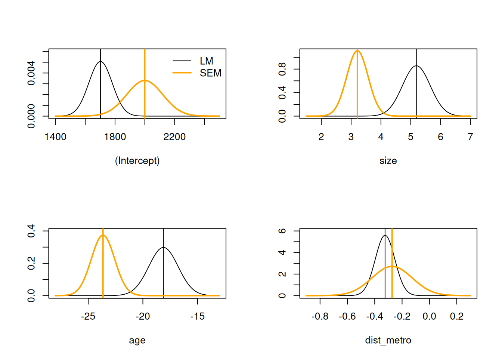

load("data/ch16.RData")
library(spdep)
# Loading required package: spData
# To access larger datasets in this package, install the
# spDataLarge package with: `install.packages('spDataLarge',
# repos='https://nowosad.github.io/drat/', type='source')`
#
# Attaching package: 'spData'
# The following object is masked _by_ '.GlobalEnv':
#
# depmunic
# Loading required package: sf
# Linking to GEOS 3.10.2, GDAL 3.4.1, PROJ 8.2.1; sf_use_s2() is TRUE17 Spatial econometrics models
Exercise 17.1
First create a spatial weights object from the k=4 symmetrized neighbour object:
library(spatialreg)
# Loading required package: Matrix
#
# Attaching package: 'spatialreg'
# The following objects are masked from 'package:spdep':
#
# get.ClusterOption, get.coresOption, get.mcOption,
# get.VerboseOption, get.ZeroPolicyOption,
# set.ClusterOption, set.coresOption, set.mcOption,
# set.VerboseOption, set.ZeroPolicyOption
lw <- spdep::nb2listw(pr_nb_k4s)Fit a linear model to the lower-level data; all the included variables seem worth retaining:
LM_pr <- lm(f_pr, data=properties_in_dd)
summary(LM_pr)
#
# Call:
# lm(formula = f_pr, data = properties_in_dd)
#
# Residuals:
# Min 1Q Median 3Q Max
# -5691.2 -456.7 -202.2 251.9 6872.9
#
# Coefficients:
# Estimate Std. Error t value Pr(>|t|)
# (Intercept) 1702.61693 78.59752 21.66 < 2e-16 ***
# size 5.18681 0.46510 11.15 < 2e-16 ***
# age -18.11938 1.33737 -13.55 < 2e-16 ***
# dist_metro -0.32446 0.07115 -4.56 5.75e-06 ***
# ---
# Signif. codes: 0 '***' 0.001 '**' 0.01 '*' 0.05 '.' 0.1 ' ' 1
#
# Residual standard error: 792.2 on 996 degrees of freedom
# Multiple R-squared: 0.2368, Adjusted R-squared: 0.2345
# F-statistic: 103 on 3 and 996 DF, p-value: < 2.2e-16However, there is strong residual autocorrelation:
library(spdep)
lm.morantest(LM_pr, lw)
#
# Global Moran I for regression residuals
#
# data:
# model: lm(formula = f_pr, data = properties_in_dd)
# weights: lw
#
# Moran I statistic standard deviate = 26.039, p-value <
# 2.2e-16
# alternative hypothesis: greater
# sample estimates:
# Observed Moran I Expectation Variance
# 0.4872794374 -0.0023026155 0.0003535235Robust (adjusted) Lagrange multiplier tests (Rao’s score tests) suggest that the fitted model should include a spatial autoregressive process in the residuals, but not in the response:
if (packageVersion("spdep") < "1.3.3") {
spdep::lm.LMtests(LM_pr, lw, test=c("RLMerr", "RLMlag"))
} else {
spdep::lm.RStests(LM_pr, lw, test=c("adjRSerr", "adjRSlag"))
}
#
# Rao's score (a.k.a Lagrange multiplier) diagnostics for
# spatial dependence
#
# data:
# model: lm(formula = f_pr, data = properties_in_dd)
# test weights: lw
#
# adjRSerr = 150.88, df = 1, p-value < 2.2e-16
#
#
# Rao's score (a.k.a Lagrange multiplier) diagnostics for
# spatial dependence
#
# data:
# model: lm(formula = f_pr, data = properties_in_dd)
# test weights: lw
#
# adjRSlag = 1.2688, df = 1, p-value = 0.26Adding in the copied out municipality department level variables, we see that they do not seem to be worth retaining (unless there are good reasons for doing so); they do however improve model fit:
LM_pr_md <- lm(f_pr_md, data=properties_in_dd)
summary(LM_pr_md)
#
# Call:
# lm(formula = f_pr_md, data = properties_in_dd)
#
# Residuals:
# Min 1Q Median 3Q Max
# -5175.9 -371.6 -107.1 266.7 6648.1
#
# Coefficients:
# Estimate Std. Error t value Pr(>|t|)
# (Intercept) 1648.17176 189.84951 8.681 <2e-16 ***
# size 4.29551 0.43386 9.901 <2e-16 ***
# age -20.18585 1.27009 -15.893 <2e-16 ***
# dist_metro -0.15180 0.07159 -2.120 0.0342 *
# foreigners -38.13473 22.54311 -1.692 0.0910 .
# prgreensp 23.90080 16.33291 1.463 0.1437
# popdens -51.82590 103.65578 -0.500 0.6172
# museums -19.06125 21.27904 -0.896 0.3706
# airbnb 0.63284 0.32887 1.924 0.0546 .
# ---
# Signif. codes: 0 '***' 0.001 '**' 0.01 '*' 0.05 '.' 0.1 ' ' 1
#
# Residual standard error: 727.6 on 991 degrees of freedom
# Multiple R-squared: 0.3596, Adjusted R-squared: 0.3544
# F-statistic: 69.55 on 8 and 991 DF, p-value: < 2.2e-16The pre-test results are similar to those for the properties-only variables:
lm.morantest(LM_pr_md, lw)
#
# Global Moran I for regression residuals
#
# data:
# model: lm(formula = f_pr_md, data = properties_in_dd)
# weights: lw
#
# Moran I statistic standard deviate = 23.707, p-value <
# 2.2e-16
# alternative hypothesis: greater
# sample estimates:
# Observed Moran I Expectation Variance
# 0.4307327715 -0.0070398073 0.0003410046and the LM tests continue to indicate an omitted spatial process in the residual rather than the response:
if (packageVersion("spdep") < "1.3.3") {
spdep::lm.LMtests(LM_pr_md, lw, test=c("RLMerr", "RLMlag"))
} else {
spdep::lm.RStests(LM_pr_md, lw, test=c("adjRSerr", "adjRSlag"))
}
#
# Rao's score (a.k.a Lagrange multiplier) diagnostics for
# spatial dependence
#
# data:
# model: lm(formula = f_pr_md, data = properties_in_dd)
# test weights: lw
#
# adjRSerr = 116.67, df = 1, p-value < 2.2e-16
#
#
# Rao's score (a.k.a Lagrange multiplier) diagnostics for
# spatial dependence
#
# data:
# model: lm(formula = f_pr_md, data = properties_in_dd)
# test weights: lw
#
# adjRSlag = 0.0035207, df = 1, p-value = 0.9527Exercise 17.2
We may update the formula for the properties-only model to include municipality department “fixed effects”, dummy variables:
LM_pr_fx <- lm(update(f_pr, . ~ . + num_dep), data=properties_in_dd)
summary(LM_pr_fx)
#
# Call:
# lm(formula = update(f_pr, . ~ . + num_dep), data = properties_in_dd)
#
# Residuals:
# Min 1Q Median 3Q Max
# -5175.3 -377.2 -97.9 272.7 6644.6
#
# Coefficients:
# Estimate Std. Error t value Pr(>|t|)
# (Intercept) 2.352e+03 9.816e+01 23.964 < 2e-16 ***
# size 4.295e+00 4.330e-01 9.919 < 2e-16 ***
# age -2.007e+01 1.269e+00 -15.819 < 2e-16 ***
# dist_metro -1.442e-01 7.154e-02 -2.015 0.044176 *
# num_dep2 -3.342e+02 8.695e+01 -3.844 0.000129 ***
# num_dep3 -4.896e+02 1.290e+02 -3.794 0.000157 ***
# num_dep4 -1.031e+03 1.193e+02 -8.641 < 2e-16 ***
# num_dep5 -8.222e+02 8.251e+01 -9.964 < 2e-16 ***
# num_dep6 -9.183e+02 7.861e+01 -11.681 < 2e-16 ***
# num_dep7 -6.527e+02 8.250e+01 -7.911 6.78e-15 ***
# ---
# Signif. codes: 0 '***' 0.001 '**' 0.01 '*' 0.05 '.' 0.1 ' ' 1
#
# Residual standard error: 726.2 on 990 degrees of freedom
# Multiple R-squared: 0.3627, Adjusted R-squared: 0.3569
# F-statistic: 62.6 on 9 and 990 DF, p-value: < 2.2e-16The pre-test output is similar to that for the models considered above:
spdep::lm.morantest(LM_pr_fx, lw)
#
# Global Moran I for regression residuals
#
# data:
# model: lm(formula = update(f_pr, . ~ . + num_dep), data =
# properties_in_dd)
# weights: lw
#
# Moran I statistic standard deviate = 23.611, p-value <
# 2.2e-16
# alternative hypothesis: greater
# sample estimates:
# Observed Moran I Expectation Variance
# 0.4268054149 -0.0079765936 0.0003390813if (packageVersion("spdep") < "1.3.3") {
spdep::lm.LMtests(LM_pr_fx, lw, test=c("RLMerr", "RLMlag"))
} else {
spdep::lm.RStests(LM_pr_fx, lw, test=c("adjRSerr", "adjRSlag"))
}
#
# Rao's score (a.k.a Lagrange multiplier) diagnostics for
# spatial dependence
#
# data:
# model: lm(formula = update(f_pr, . ~ . + num_dep), data =
# properties_in_dd)
# test weights: lw
#
# adjRSerr = 117.99, df = 1, p-value < 2.2e-16
#
#
# Rao's score (a.k.a Lagrange multiplier) diagnostics for
# spatial dependence
#
# data:
# model: lm(formula = update(f_pr, . ~ . + num_dep), data =
# properties_in_dd)
# test weights: lw
#
# adjRSlag = 0.030669, df = 1, p-value = 0.861We may fit a regimes model, where separate regression coefficients are calculated for interactions between the municipality department dummies and the included variables; size and dist_metro only retian influence for municipality departments 1 and 2:
LM_pr_reg <- lm(update(f_pr, . ~ num_dep/(0 + .)), data=properties_in_dd)
summary(LM_pr_reg)
#
# Call:
# lm(formula = update(f_pr, . ~ num_dep/(0 + .)), data = properties_in_dd)
#
# Residuals:
# Min 1Q Median 3Q Max
# -2055.0 -328.6 -62.8 257.2 6353.5
#
# Coefficients:
# Estimate Std. Error t value Pr(>|t|)
# num_dep1 2366.55794 206.45952 11.463 < 2e-16 ***
# num_dep2 1114.08697 167.84304 6.638 5.29e-11 ***
# num_dep3 2095.07546 424.99044 4.930 9.68e-07 ***
# num_dep4 1351.29266 465.10378 2.905 0.003752 **
# num_dep5 1695.64352 234.29757 7.237 9.30e-13 ***
# num_dep6 1611.35873 167.16126 9.640 < 2e-16 ***
# num_dep7 1705.22449 176.18849 9.678 < 2e-16 ***
# num_dep1:size 1.36164 0.51169 2.661 0.007918 **
# num_dep2:size 14.62370 0.99848 14.646 < 2e-16 ***
# num_dep3:size 2.25680 4.50973 0.500 0.616886
# num_dep4:size 3.79360 4.56205 0.832 0.405864
# num_dep5:size 3.06546 1.93716 1.582 0.113872
# num_dep6:size 1.49313 1.33800 1.116 0.264724
# num_dep7:size 5.91935 1.37694 4.299 1.89e-05 ***
# num_dep1:age -6.83169 3.55084 -1.924 0.054651 .
# num_dep2:age -9.36978 3.07762 -3.044 0.002393 **
# num_dep3:age -18.07526 5.65924 -3.194 0.001449 **
# num_dep4:age -22.43736 5.03824 -4.453 9.43e-06 ***
# num_dep5:age -27.07143 2.71096 -9.986 < 2e-16 ***
# num_dep6:age -23.33611 2.34894 -9.935 < 2e-16 ***
# num_dep7:age -24.34731 2.65955 -9.155 < 2e-16 ***
# num_dep1:dist_metro -0.72509 0.21429 -3.384 0.000744 ***
# num_dep2:dist_metro -0.61219 0.17457 -3.507 0.000474 ***
# num_dep3:dist_metro -0.56261 0.52693 -1.068 0.285918
# num_dep4:dist_metro 0.02032 0.43294 0.047 0.962570
# num_dep5:dist_metro 0.10681 0.29026 0.368 0.712965
# num_dep6:dist_metro 0.05074 0.09829 0.516 0.605810
# num_dep7:dist_metro -0.14110 0.14727 -0.958 0.338274
# ---
# Signif. codes: 0 '***' 0.001 '**' 0.01 '*' 0.05 '.' 0.1 ' ' 1
#
# Residual standard error: 663.8 on 972 degrees of freedom
# Multiple R-squared: 0.8323, Adjusted R-squared: 0.8274
# F-statistic: 172.2 on 28 and 972 DF, p-value: < 2.2e-16The pre-test results are now changed, with possible spatial processes in both residuals and response being indicated:
spdep::lm.morantest(LM_pr_reg, lw)
#
# Global Moran I for regression residuals
#
# data:
# model: lm(formula = update(f_pr, . ~ num_dep/(0 + .)), data
# = properties_in_dd)
# weights: lw
#
# Moran I statistic standard deviate = 18.521, p-value <
# 2.2e-16
# alternative hypothesis: greater
# sample estimates:
# Observed Moran I Expectation Variance
# 0.3198250101 -0.0139390950 0.0003247394if (packageVersion("spdep") < "1.3.3") {
spdep::lm.LMtests(LM_pr_reg, lw, test=c("RLMerr", "RLMlag"))
} else {
spdep::lm.RStests(LM_pr_reg, lw, test=c("adjRSerr", "adjRSlag"))
}
#
# Rao's score (a.k.a Lagrange multiplier) diagnostics for
# spatial dependence
#
# data:
# model: lm(formula = update(f_pr, . ~ num_dep/(0 + .)), data
# = properties_in_dd)
# test weights: lw
#
# adjRSerr = 40.873, df = 1, p-value = 1.625e-10
#
#
# Rao's score (a.k.a Lagrange multiplier) diagnostics for
# spatial dependence
#
# data:
# model: lm(formula = update(f_pr, . ~ num_dep/(0 + .)), data
# = properties_in_dd)
# test weights: lw
#
# adjRSlag = 19.055, df = 1, p-value = 1.27e-05Exercise 17.3
Fitting models initially by maximum likelihood (GMM may also be used), we pre-compute the eigenvalues:
eigs <- eigenw(lw)The strong residual autocorrelation is picked up by the spatial coefficient, but unfortunately the Hausman test shows strong mis-specification:
SEM_pr <- errorsarlm(f_pr, data=properties_in_dd, listw=lw, Durbin=FALSE,
control=list(pre_eig=eigs))
summary(SEM_pr, Hausman=TRUE)
#
# Call:
# errorsarlm(formula = f_pr, data = properties_in_dd, listw = lw,
# Durbin = FALSE, control = list(pre_eig = eigs))
#
# Residuals:
# Min 1Q Median 3Q Max
# -3214.224 -337.719 -75.561 196.920 5411.793
#
# Type: error
# Coefficients: (asymptotic standard errors)
# Estimate Std. Error z value Pr(>|z|)
# (Intercept) 1999.09195 120.70305 16.5621 < 2e-16
# size 3.21092 0.35840 8.9591 < 2e-16
# age -23.64759 1.06426 -22.2199 < 2e-16
# dist_metro -0.27302 0.14694 -1.8581 0.06315
#
# Lambda: 0.6927, LR test value: 459.76, p-value: < 2.22e-16
# Asymptotic standard error: 0.024179
# z-value: 28.649, p-value: < 2.22e-16
# Wald statistic: 820.74, p-value: < 2.22e-16
#
# Log likelihood: -7861.931 for error model
# ML residual variance (sigma squared): 354240, (sigma: 595.18)
# Number of observations: 1000
# Number of parameters estimated: 6
# AIC: 15736, (AIC for lm: 16194)
# Hausman test: -246.29, df: 4, p-value: < 2.22e-16The Hausman test compares the OLS and SEM coefficient estimates and their standard errors, assessing whether their distributions overlap sufficiently to suggest the absence of major mis-specification:
The tables are harder to read than the figure, which shows that the coefficient estimates do differ a lot for two variables, somewhat for the intercept, and little for one variable, but where the ML standard error estimate under usual assumptions crosses zero:
opar <- par(mfrow=c(2,2))
plot(1, type="n", xlim=c(1400, 2500), ylim=c(0, 0.006), xlab=rownames(LM_coefs)[1], ylab="")
curve(dnorm(x, mean=LM_coefs[1,1], sd=LM_coefs[1,2]), add=TRUE)
abline(v=LM_coefs[1,1])
abline(v=SEM_coefs[1,1], lwd=2, col="orange")
curve(dnorm(x, mean=SEM_coefs[1,1], sd=SEM_coefs[1,2]), add=TRUE, col="orange", lwd=2)
legend("topright", legend=c("LM", "SEM"), col=c("black", "orange"), lwd=1:2, bty="n")
plot(1, type="n", xlim=c(1.5, 7), ylim=c(0, 1.1), xlab=rownames(LM_coefs)[2], ylab="")
curve(dnorm(x, mean=LM_coefs[2,1], sd=LM_coefs[2,2]), add=TRUE)
abline(v=LM_coefs[2,1])
abline(v=SEM_coefs[2,1], lwd=2, col="orange")
curve(dnorm(x, mean=SEM_coefs[2,1], sd=SEM_coefs[2,2]), add=TRUE, col="orange", lwd=2)
plot(1, type="n", xlim=c(-28, -13), ylim=c(0, 0.4), xlab=rownames(LM_coefs)[3], ylab="")
curve(dnorm(x, mean=LM_coefs[3,1], sd=LM_coefs[3,2]), add=TRUE)
abline(v=LM_coefs[3,1])
abline(v=SEM_coefs[3,1], lwd=2, col="orange")
curve(dnorm(x, mean=SEM_coefs[3,1], sd=SEM_coefs[3,2]), add=TRUE, col="orange", lwd=2)
plot(1, type="n", xlim=c(-0.9, 0.3), ylim=c(0, 6), xlab=rownames(LM_coefs)[4], ylab="")
curve(dnorm(x, mean=LM_coefs[4,1], sd=LM_coefs[4,2]), add=TRUE)
abline(v=LM_coefs[4,1])
abline(v=SEM_coefs[4,1], lwd=2, col="orange")
curve(dnorm(x, mean=SEM_coefs[4,1], sd=SEM_coefs[4,2]), add=TRUE, col="orange", lwd=2)
par(opar)The Hausman test also suggests mis-specification for the SEM model augmented with the municipality department level variables:
SEM_pr_md <- errorsarlm(f_pr_md, data=properties_in_dd, listw=lw, Durbin=FALSE,
control=list(pre_eig=eigs))
summary(SEM_pr_md, Hausman=TRUE)
#
# Call:
# errorsarlm(formula = f_pr_md, data = properties_in_dd, listw = lw,
# Durbin = FALSE, control = list(pre_eig = eigs))
#
# Residuals:
# Min 1Q Median 3Q Max
# -3421.923 -320.793 -65.301 224.785 5452.101
#
# Type: error
# Coefficients: (asymptotic standard errors)
# Estimate Std. Error z value Pr(>|z|)
# (Intercept) 1945.79329 333.00264 5.8432 5.121e-09
# size 3.05839 0.35711 8.5643 < 2.2e-16
# age -23.45168 1.06301 -22.0616 < 2.2e-16
# dist_metro -0.14969 0.13214 -1.1328 0.2573
# foreigners -7.66310 42.72513 -0.1794 0.8577
# prgreensp 38.40538 31.36427 1.2245 0.2208
# popdens -211.52189 190.49686 -1.1104 0.2668
# museums -33.84713 39.33249 -0.8605 0.3895
# airbnb 0.59183 0.60062 0.9854 0.3244
#
# Lambda: 0.62414, LR test value: 335.94, p-value: < 2.22e-16
# Asymptotic standard error: 0.028289
# z-value: 22.063, p-value: < 2.22e-16
# Wald statistic: 486.78, p-value: < 2.22e-16
#
# Log likelihood: -7836.138 for error model
# ML residual variance (sigma squared): 345330, (sigma: 587.65)
# Number of observations: 1000
# Number of parameters estimated: 11
# AIC: 15694, (AIC for lm: 16028)
# Hausman test: -1348.4, df: 9, p-value: < 2.22e-16Extending to the SDEM models, and reporting impacts:
SDEM_pr <- errorsarlm(f_pr, data=properties_in_dd, listw=lw, Durbin=TRUE,
control=list(pre_eig=eigs))
summary(impacts(SDEM_pr), short=TRUE, zstats=TRUE)
# Impact measures (SDEM, glht, n):
# Direct Indirect Total
# size 3.4445402 2.0126056 5.4571458
# age -21.9222898 10.9931409 -10.9291489
# dist_metro 0.2000411 -0.5494199 -0.3493789
# ========================================================
# Standard errors:
# Direct Indirect Total
# size 0.3983375 1.0053504 1.2310345
# age 1.1425638 2.5191830 3.1162005
# dist_metro 0.2734082 0.3104821 0.1551602
# ========================================================
# Z-values:
# Direct Indirect Total
# size 8.647291 2.001895 4.432976
# age -19.186928 4.363772 -3.507203
# dist_metro 0.731657 -1.769570 -2.251730
#
# p-values:
# Direct Indirect Total
# size < 2e-16 0.045296 9.2941e-06
# age < 2e-16 1.2784e-05 0.00045284
# dist_metro 0.46438 0.076799 0.02433931we have Hausman test results still indicating strong mis-specification:
Hausman.test(SDEM_pr)
#
# Spatial Hausman test (asymptotic)
#
# data: NULL
# Hausman test = 53.765, df = 7, p-value = 2.618e-09The same applies to the properties variables augmented with the municipality department level variables:
SDEM_pr_md <- errorsarlm(f_pr_md, data=properties_in_dd, listw=lw, Durbin=TRUE,
control=list(pre_eig=eigs))
summary(impacts(SDEM_pr_md), short=TRUE, zstats=TRUE)
# Impact measures (SDEM, glht, n):
# Direct Indirect Total
# size 3.2902830 1.6915614 4.9818445
# age -22.5877018 7.0789016 -15.5088003
# dist_metro 0.2706259 -0.4643729 -0.1937470
# foreigners 107.6194776 -146.8457500 -39.2262724
# prgreensp 35.3436544 -12.5353754 22.8082791
# popdens -456.7261803 400.0782299 -56.6479504
# museums 51.9819776 -93.3777533 -41.3957757
# airbnb -0.8658814 1.7162902 0.8504087
# ========================================================
# Standard errors:
# Direct Indirect Total
# size 0.3900357 0.9742177 1.1837952
# age 1.1250931 2.5043048 3.0554700
# dist_metro 0.2747535 0.3097415 0.1459340
# foreigners 87.2520038 94.9604414 45.6522663
# prgreensp 74.3147380 79.3194509 33.1282711
# popdens 403.5523886 439.7109665 210.7386112
# museums 85.7152273 93.9719231 43.7578243
# airbnb 1.1452242 1.2862740 0.6730806
# ========================================================
# Z-values:
# Direct Indirect Total
# size 8.4358510 1.7363279 4.2083670
# age -20.0762964 2.8266933 -5.0757495
# dist_metro 0.9849770 -1.4992275 -1.3276345
# foreigners 1.2334327 -1.5463887 -0.8592404
# prgreensp 0.4755941 -0.1580366 0.6884838
# popdens -1.1317643 0.9098664 -0.2688067
# museums 0.6064497 -0.9936772 -0.9460200
# airbnb -0.7560803 1.3343115 1.2634575
#
# p-values:
# Direct Indirect Total
# size < 2e-16 0.0825059 2.5722e-05
# age < 2e-16 0.0047031 3.8597e-07
# dist_metro 0.32464 0.1338146 0.18430
# foreigners 0.21741 0.1220107 0.39021
# prgreensp 0.63436 0.8744280 0.49115
# popdens 0.25773 0.3628930 0.78808
# museums 0.54422 0.3203801 0.34414
# airbnb 0.44960 0.1821018 0.20642Hausman.test(SDEM_pr_md)
#
# Spatial Hausman test (asymptotic)
#
# data: NULL
# Hausman test = 229.24, df = 17, p-value < 2.2e-16Reaching out to the SLX models does not help, because although - as with the SDEM models - the indirect impacts (coefficients on lagged \(X\) variables) are large, so including lagged \(X\) variables especially at the properties level seems sensible, there is serious residual autocorrelation, and now the pre-test strategy points to a missing spatial process in the response:
SLX_pr <- lmSLX(f_pr, data=properties_in_dd, listw=lw, Durbin=TRUE)
summary(impacts(SLX_pr), short=TRUE, zstats=TRUE)
# Impact measures (SlX, glht, n-k):
# Direct Indirect Total
# size 3.9424014 6.4922295 10.434631
# age -22.6778266 13.6377582 -9.040068
# dist_metro 0.5710406 -0.8727816 -0.301741
# ========================================================
# Standard errors:
# Direct Indirect Total
# size 0.4600099 0.8896271 0.90358915
# age 1.3642232 2.1630220 2.15389898
# dist_metro 0.3650804 0.3766962 0.07031201
# ========================================================
# Z-values:
# Direct Indirect Total
# size 8.570254 7.297698 11.547982
# age -16.623252 6.304956 -4.197072
# dist_metro 1.564150 -2.316938 -4.291458
#
# p-values:
# Direct Indirect Total
# size < 2e-16 2.9265e-13 < 2.22e-16
# age < 2e-16 2.8828e-10 2.7039e-05
# dist_metro 0.11778 0.020507 1.7750e-05spdep::lm.morantest(SLX_pr, lw)
#
# Global Moran I for regression residuals
#
# data:
# model: lm(formula = formula(paste("y ~ ",
# paste(colnames(x)[-1], collapse = "+"))), data =
# as.data.frame(x), weights = weights)
# weights: lw
#
# Moran I statistic standard deviate = 24.275, p-value <
# 2.2e-16
# alternative hypothesis: greater
# sample estimates:
# Observed Moran I Expectation Variance
# 0.4505572652 -0.0029076149 0.0003489564if (packageVersion("spdep") < "1.3.3") {
spdep::lm.LMtests(SLX_pr, lw, test=c("RLMerr", "RLMlag"))
} else {
spdep::lm.RStests(SLX_pr, lw, test=c("adjRSerr", "adjRSlag"))
}
#
# Rao's score (a.k.a Lagrange multiplier) diagnostics for
# spatial dependence
#
# data:
# model: lm(prpsqm ~ size + age + dist_metro + lag.size +
# lag.age + lag.dist_metro, data = properties_in_dd, listw =
# lw)
# test weights: lw
#
# adjRSerr = 3.9929, df = 1, p-value = 0.04569
#
#
# Rao's score (a.k.a Lagrange multiplier) diagnostics for
# spatial dependence
#
# data:
# model: lm(prpsqm ~ size + age + dist_metro + lag.size +
# lag.age + lag.dist_metro, data = properties_in_dd, listw =
# lw)
# test weights: lw
#
# adjRSlag = 54.185, df = 1, p-value = 1.825e-13SLX_pr_md <- lmSLX(f_pr_md, data=properties_in_dd, listw=lw, Durbin=TRUE)
summary(impacts(SLX_pr_md), short=TRUE, zstats=TRUE)
# Impact measures (SlX, glht, n-k):
# Direct Indirect Total
# size 3.6899279 5.1853598 8.8752878
# age -22.4862582 7.7433691 -14.7428891
# dist_metro 0.4883417 -0.6216376 -0.1332958
# foreigners 111.8693211 -144.2912677 -32.4219466
# prgreensp -7.9374540 33.7296361 25.7921821
# popdens -175.9679694 76.3367323 -99.6312371
# museums 132.9274926 -150.5428303 -17.6153377
# airbnb -1.6203107 2.0992718 0.4789610
# ========================================================
# Standard errors:
# Direct Indirect Total
# size 0.4374870 0.8640075 0.88540694
# age 1.2999436 2.1706052 2.20258646
# dist_metro 0.3469593 0.3606514 0.07353124
# foreigners 113.3256387 115.6423334 22.69480121
# prgreensp 98.1127344 99.5966256 16.36663957
# popdens 521.4661878 532.2960996 105.63203070
# museums 115.4990904 118.1243717 21.60621836
# airbnb 1.5181784 1.5638933 0.33577968
# ========================================================
# Z-values:
# Direct Indirect Total
# size 8.43437158 6.0015219 10.0239645
# age -17.29787276 3.5673779 -6.6934440
# dist_metro 1.40748996 -1.7236520 -1.8127784
# foreigners 0.98714927 -1.2477374 -1.4286068
# prgreensp -0.08090136 0.3386624 1.5758997
# popdens -0.33744847 0.1434103 -0.9431915
# museums 1.15089645 -1.2744434 -0.8152902
# airbnb -1.06727292 1.3423369 1.4264145
#
# p-values:
# Direct Indirect Total
# size < 2e-16 1.9548e-09 < 2.22e-16
# age < 2e-16 0.00036057 2.1798e-11
# dist_metro 0.15928 0.08477068 0.069866
# foreigners 0.32357 0.21212723 0.153117
# prgreensp 0.93552 0.73486404 0.115049
# popdens 0.73578 0.88596617 0.345583
# museums 0.24977 0.20250631 0.414906
# airbnb 0.28585 0.17948677 0.153749spdep::lm.morantest(SLX_pr_md, lw)
#
# Global Moran I for regression residuals
#
# data:
# model: lm(formula = formula(paste("y ~ ",
# paste(colnames(x)[-1], collapse = "+"))), data =
# as.data.frame(x), weights = weights)
# weights: lw
#
# Moran I statistic standard deviate = 22.047, p-value <
# 2.2e-16
# alternative hypothesis: greater
# sample estimates:
# Observed Moran I Expectation Variance
# 0.3978202243 -0.0070160067 0.0003371825if (packageVersion("spdep") < "1.3.3") {
spdep::lm.LMtests(SLX_pr_md, lw, test=c("RLMerr", "RLMlag"))
} else {
spdep::lm.RStests(SLX_pr_md, lw, test=c("adjRSerr", "adjRSlag"))
}
#
# Rao's score (a.k.a Lagrange multiplier) diagnostics for
# spatial dependence
#
# data:
# model: lm(prpsqm ~ size + age + dist_metro + foreigners +
# prgreensp + popdens + museums + airbnb + lag.size + lag.age
# + lag.dist_metro + lag.foreigners + lag.prgreensp +
# lag.popdens + lag.museums + lag.airbnb, data =
# properties_in_dd, listw = lw)
# test weights: lw
#
# adjRSerr = 15.011, df = 1, p-value = 0.0001069
#
#
# Rao's score (a.k.a Lagrange multiplier) diagnostics for
# spatial dependence
#
# data:
# model: lm(prpsqm ~ size + age + dist_metro + foreigners +
# prgreensp + popdens + museums + airbnb + lag.size + lag.age
# + lag.dist_metro + lag.foreigners + lag.prgreensp +
# lag.popdens + lag.museums + lag.airbnb, data =
# properties_in_dd, listw = lw)
# test weights: lw
#
# adjRSlag = 56.758, df = 1, p-value = 4.929e-14So on balance, the pre-test strategy has not worked out too well; it is unclear what is missing in the model.
Exercise 17.4
Turning to estimating the general nested model first, followed by excluding the Durbin (spatially lagged \(X\)) variables, a likelihood ratio test shows that the spatially lagged \(X\) variables should be retained in the model:
lmtest::lrtest(SARAR_pr, GNM_pr)
# Likelihood ratio test
#
# Model 1: prpsqm ~ size + age + dist_metro
# Model 2: prpsqm ~ size + age + dist_metro
# #Df LogLik Df Chisq Pr(>Chisq)
# 1 7 -7814.6
# 2 10 -7783.9 3 61.303 3.096e-13 ***
# ---
# Signif. codes: 0 '***' 0.001 '**' 0.01 '*' 0.05 '.' 0.1 ' ' 1Again using a likelihood ratio test, the GNM model outperforms the SDEM model:
lmtest::lrtest(SDEM_pr, GNM_pr)
# Likelihood ratio test
#
# Model 1: prpsqm ~ size + age + dist_metro
# Model 2: prpsqm ~ size + age + dist_metro
# #Df LogLik Df Chisq Pr(>Chisq)
# 1 9 -7850.3
# 2 10 -7783.9 1 132.7 < 2.2e-16 ***
# ---
# Signif. codes: 0 '***' 0.001 '**' 0.01 '*' 0.05 '.' 0.1 ' ' 1as is also the case with the SDM model:
lmtest::lrtest(SDM_pr, GNM_pr)
# Likelihood ratio test
#
# Model 1: prpsqm ~ size + age + dist_metro
# Model 2: prpsqm ~ size + age + dist_metro
# #Df LogLik Df Chisq Pr(>Chisq)
# 1 9 -7842.4
# 2 10 -7783.9 1 117.06 < 2.2e-16 ***
# ---
# Signif. codes: 0 '***' 0.001 '**' 0.01 '*' 0.05 '.' 0.1 ' ' 1and the SLX model:
lmtest::lrtest(SLX_pr, GNM_pr)
# Warning in modelUpdate(objects[[i - 1]], objects[[i]]): original
# model was of class "SlX", updated model is of class "Sarlm"
# Likelihood ratio test
#
# Model 1: y ~ size + age + dist_metro + lag.size + lag.age + lag.dist_metro
# Model 2: prpsqm ~ size + age + dist_metro
# #Df LogLik Df Chisq Pr(>Chisq)
# 1 8 -8040.1
# 2 10 -7783.9 2 512.46 < 2.2e-16 ***
# ---
# Signif. codes: 0 '***' 0.001 '**' 0.01 '*' 0.05 '.' 0.1 ' ' 1Is the inclusion of the municipality department level variables in the GNM model justified?
No, not really:
lmtest::lrtest(GNM_pr, GNM_pr_md)
# Likelihood ratio test
#
# Model 1: prpsqm ~ size + age + dist_metro
# Model 2: prpsqm ~ size + age + dist_metro + foreigners + prgreensp + popdens +
# museums + airbnb
# #Df LogLik Df Chisq Pr(>Chisq)
# 1 10 -7783.9
# 2 20 -7773.4 10 20.956 0.0214 *
# ---
# Signif. codes: 0 '***' 0.001 '**' 0.01 '*' 0.05 '.' 0.1 ' ' 1If we drop the municipality department level variables from the Durbin term, we lose fewer degrees of freedom, so preferring the model including the municipality department level variables:
lmtest::lrtest(GNM_pr, GNM_pr_md1)
# Likelihood ratio test
#
# Model 1: prpsqm ~ size + age + dist_metro
# Model 2: prpsqm ~ size + age + dist_metro + foreigners + prgreensp + popdens +
# museums + airbnb
# #Df LogLik Df Chisq Pr(>Chisq)
# 1 10 -7783.9
# 2 15 -7775.5 5 16.794 0.004908 **
# ---
# Signif. codes: 0 '***' 0.001 '**' 0.01 '*' 0.05 '.' 0.1 ' ' 1Unfortunately, impacts are depressing here:
trs <- trW(as(lw, "CsparseMatrix"))
i_GNM_pr_md1 <- impacts(GNM_pr_md1, tr=trs, R=2000)
summary(i_GNM_pr_md1, short=TRUE, zstats=TRUE)
# Impact measures (sacmixed, trace):
# Direct Indirect Total
# size 3.23740995 7.2985861 10.5359961
# age -23.03565197 10.9935858 -12.0420662
# dist_metro 0.26484655 -0.4603147 -0.1954681
# foreigners -5.71030959 -23.1783890 -28.8886986
# prgreensp 5.63045876 22.8542711 28.4847299
# popdens -20.87711879 -84.7411115 -105.6182302
# museums -4.03610471 -16.3827204 -20.4188251
# airbnb 0.09458806 0.3839369 0.4785250
# ========================================================
# Simulation results ( variance matrix):
# ========================================================
# Simulated standard errors
# Direct Indirect Total
# size 0.3680353 2.5504088 2.6846911
# age 1.0749339 6.3884046 6.7886324
# dist_metro 0.2184657 0.3178597 0.2035124
# foreigners 11.7129786 48.1083818 59.7642999
# prgreensp 8.2869869 33.9824209 42.2278410
# popdens 54.2315621 222.3372213 276.3461138
# museums 10.9633698 44.9563584 55.8772266
# airbnb 0.1709642 0.6991380 0.8692972
#
# Simulated z-values:
# Direct Indirect Total
# size 8.8149170 2.8441673 3.9103159
# age -21.4111002 1.7421794 -1.7508345
# dist_metro 1.1435193 -1.3781133 -0.9248918
# foreigners -0.5343145 -0.5268050 -0.5287797
# prgreensp 0.6620752 0.6527711 0.6552395
# popdens -0.3516910 -0.3451014 -0.3466726
# museums -0.3799537 -0.3728731 -0.3745460
# airbnb 0.5789415 0.5709755 0.5730709
#
# Simulated p-values:
# Direct Indirect Total
# size < 2e-16 0.0044528 9.2176e-05
# age < 2e-16 0.0814771 0.079974
# dist_metro 0.25282 0.1681683 0.355022
# foreigners 0.59312 0.5983290 0.596958
# prgreensp 0.50792 0.5139039 0.512314
# popdens 0.72507 0.7300182 0.728837
# museums 0.70398 0.7092429 0.707998
# airbnb 0.56263 0.5680162 0.566597The values and standard errors of the spatial coefficients suggest numerical problems in finding an optimum where the two coefficients are equally strong but with opposing signs:
c("response"=GNM_pr_md1$rho, "response se"=GNM_pr_md1$rho.se, "residual"=GNM_pr_md1$lambda, "residual se"=GNM_pr_md1$lambda.se)
# response.rho response se residual.lambda residual se
# 0.85971901 0.01547632 -0.86679315 0.04377824If we fall back on the properties level only GNM, total impacts are only significant in conventional terms for size:
i_GNM_pr <- impacts(GNM_pr, tr=trs, R=2000)
summary(i_GNM_pr, short=TRUE, zstats=TRUE)
# Impact measures (sacmixed, trace):
# Direct Indirect Total
# size 3.3625439 9.2475203 12.610064
# age -22.7517497 16.8353059 -5.916444
# dist_metro 0.2927224 -0.6523254 -0.359603
# ========================================================
# Simulation results ( variance matrix):
# ========================================================
# Simulated standard errors
# Direct Indirect Total
# size 0.3756222 2.8130826 2.9596761
# age 1.0688955 6.5972284 6.9894258
# dist_metro 0.2212282 0.3135701 0.2018621
#
# Simulated z-values:
# Direct Indirect Total
# size 8.995777 3.267141 4.2470026
# age -21.269398 2.531195 -0.8635747
# dist_metro 1.313532 -2.082336 -1.7951270
#
# Simulated p-values:
# Direct Indirect Total
# size <2e-16 0.0010864 2.1665e-05
# age <2e-16 0.0113675 0.387822
# dist_metro 0.189 0.0373118 0.072633The same problem occurs without the municipality department level variables; the impacts are being driven by the large spatial coefficient on the lagged response:
c("response"=GNM_pr$rho, "response se"=GNM_pr$rho.se, "residual"=GNM_pr$lambda, "residual se"=GNM_pr$lambda.se)
# response.rho response se residual.lambda residual se
# 0.88013826 0.01319649 -0.89698379 0.03914227Exercise 17.5
We cannot say that the spatial econometrics approach has reached a clear conclusion. When including the upper level variables, we introduce a lot of spatial autocorrelation at the lower level. It is arguable that the MRF random effect at the upper level and including only the properties level variables gets at least as far as the most complex spatial econometrics models. It is fairly clear that mapping the actual green space and museums, and measuring distance from each property to the attractions would remove the scale problem for those variables. Disaggregation of the foreigners, airbnb and population density variables would be highly desirable. With improvements to the properties level data set, including more variables describing the properties themselves, much of the mis-specification should be removed.